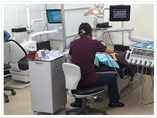

医院紹介【西新宿歯科TOYOクリニック】
西新宿歯科TOYOクリニックの納得治療
西新宿歯科TOYOクリニックは、患者さん『ひとりひとりの立場』に立って、わかりやすく、ていねいで、正しい診療サービスを行います。
あたたかい人柄で確かな技術をもつ、信頼できるドクターが、治療内容や治療スケジュールをわかりやすくお話します。
技術の習得、設備の充実は、歯科医として患者さんに当たり前のサービスと考えております。そして、コミュニケーションを大切に、ご納得いただける完全治療を目指しています。
院内・スタッフ紹介
患者さんに安心して診察を受けて頂けるように心がけております。

落ち着いた待合室

衛生管理の行き届いた設備。
診療室はセパレートされています。
アクセスの良さも医院の売りです
 患者さんと付き合っていただける歯科医院を目指すにはアクセスの良さも必要と考えております。各路線の新宿駅から5分以内という立地です。
患者さんと付き合っていただける歯科医院を目指すにはアクセスの良さも必要と考えております。各路線の新宿駅から5分以内という立地です。
岡崎ビル3Ｆ3Ｆにあります。1Fの看板を目印にして下さい
過去にこのようなことをやっておりました
このたびボランティアで100円検診を行っております。
歯にお悩みのある方、お気軽にお電話ください。